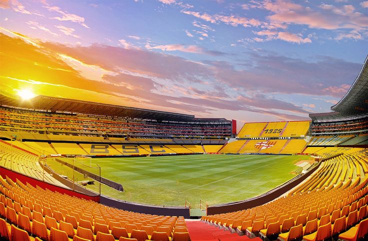
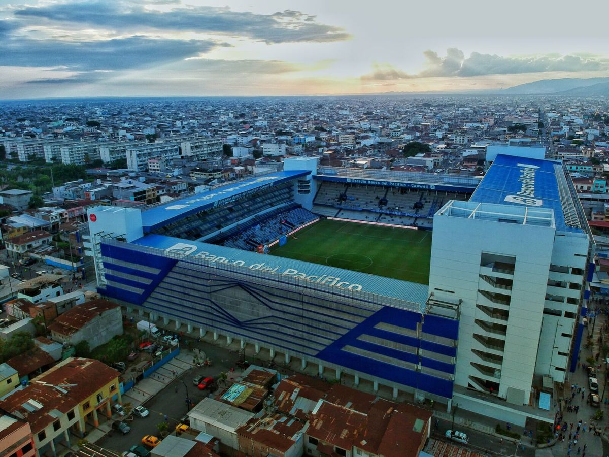
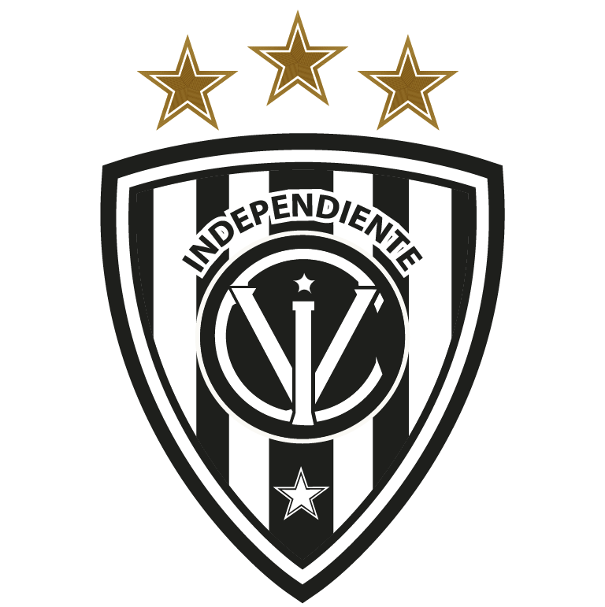
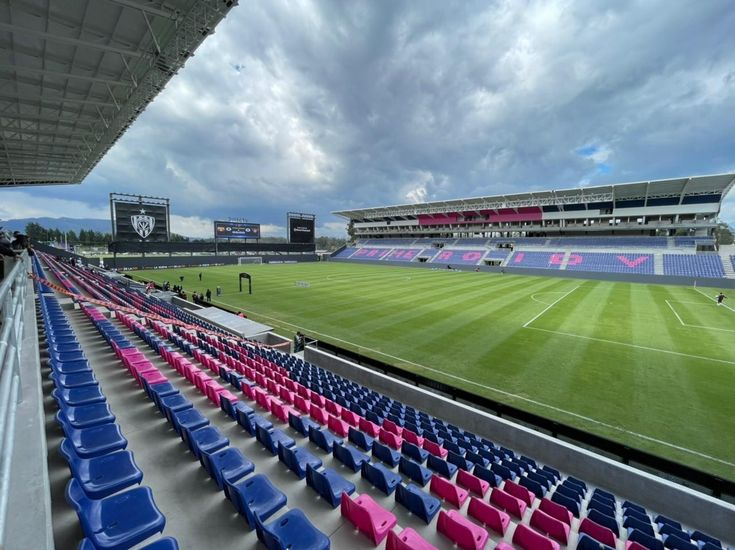

🏟️ Clubes históricos del fútbol ecuatoriano
Barcelona SC
Ciudad: Guayaquil
Estadio: Monumental Isidro Romero Carbo
Fundado en 1925, es uno de los equipos más populares del país.
Emelec
Ciudad: Guayaquil
Estadio: George Capwell
Reconocido por su hinchada y estilo ofensivo.
Liga de Quito
Ciudad: Quito
Estadio: Rodrigo Paz Delgado

Primer club ecuatoriano en ganar la Copa Libertadores.
Independiente del Valle
Ciudad: Sangolquí
Estadio: Banco Guayaquil
Conocido por su cantera y crecimiento reciente.